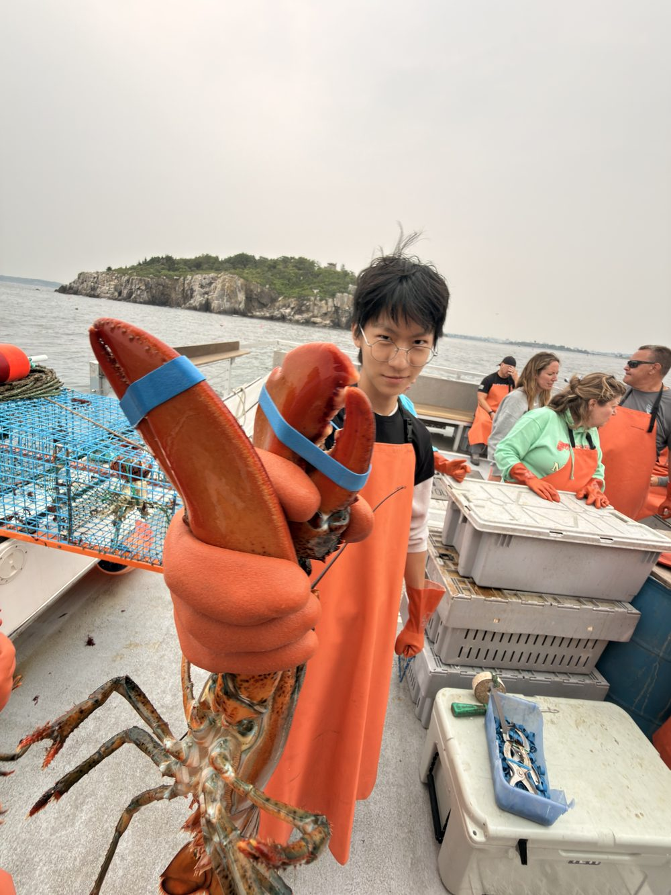

Electrical & Computer Engineering / UCLA
Tony Chen
Talent in the hands of a Jester.
I build things that move. Over the last few years that has meant a competition robot, a 3D-printed race car with real Ackermann steering, an electric vehicle tuned to stop within a centimeter of a mark it doesn't learn until minutes before the run, and a telescope that finds its own targets.
Most of it starts in Fusion 360 and ends on a print bed or a mill. The summer before college I worked on rover autonomy at NASA, which is where the software half of this caught up with the mechanical half.
Los Angeles, CA
